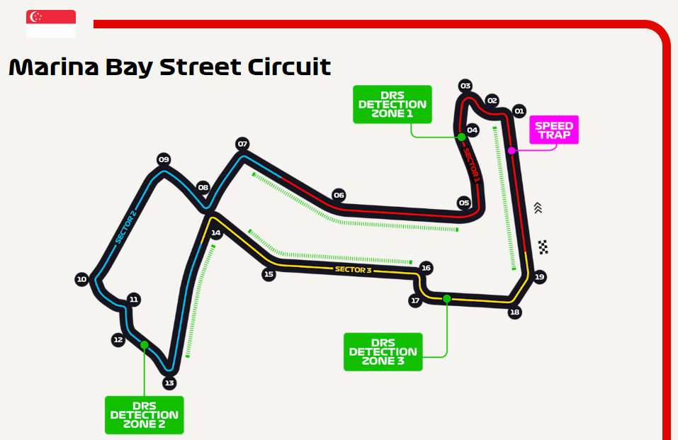
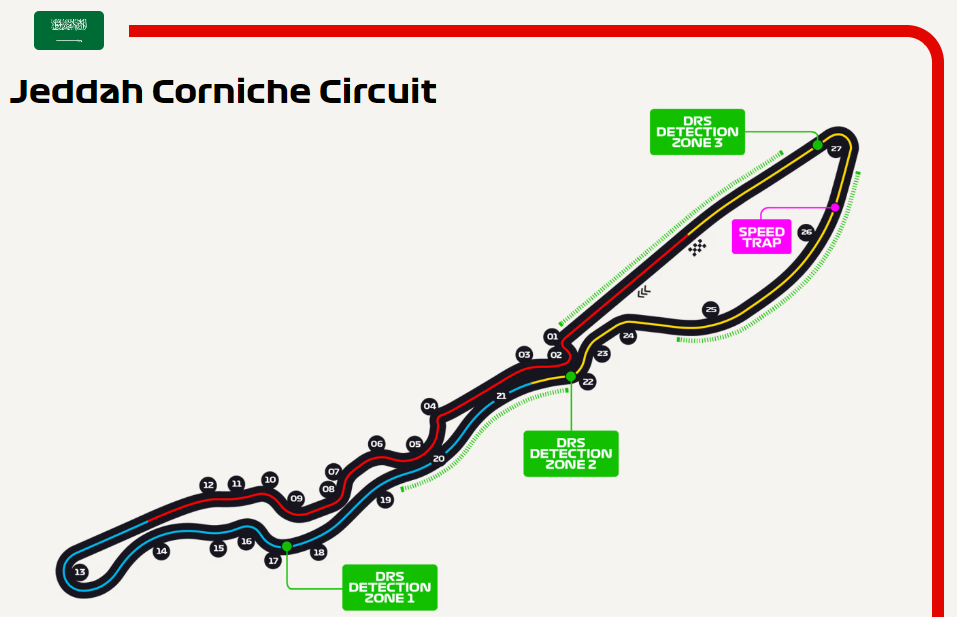
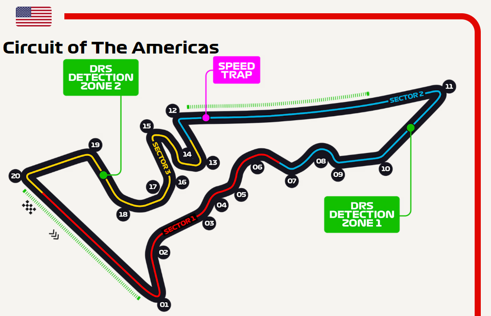

<html lang="en"></html>
<head>
    <meta charset="UTF-8">
    <meta name="viewport" content="width=device-width, initial-scale=1.0">
    <title>CIRCUITS</title>
</head>
<body>
    
</body>
</html>
<html lang ="en"></html>
<head>
    <link rel="stylesheet" href="circuits.css">
</head>
<body>

    <h3><br>THE CIRCUITS<br></h3>


  <section class="CIRCUIT1">

    <br>
    <b>SINGAPORE</b>
        <A><br><br>When was the track built?</A>
        <p>The Marina Bay Circuit arrived on the scene in 2008. A street track with the city's famous skyline as its spectacular backdrop, the initial circuit plan by Herman Tilke was refined by KBR Inc, while the event has quickly established itself as one of the standouts on the F1 calendar.</p>     
        <A> <br> When was it's first Grand Prix?</A>
        <p> In 2008, Singapore had the honour of hosting the first night-time race in F1 history. The Grand Prix – the 15th round of that season – proved a huge hit with the teams and drivers, while Renault’s Fernando Alonso claimed a controversial victory. </p>
        <A> <br> What's the circuit like?</A>
         <p>The Marina Bay Circuit is one of the most physically demanding on the calendar, its bumpy street surface coupled with humid conditions giving the drivers plenty to think about. Even after a 2023 layout change reducing the number of corners from 23 to 19, they are working the wheel a lot, too, around the high-speed lap – the physical stress causing them to lose as much as 3kg in body weight over the course of a race.</p>
   
         <section class="CIRCUIT2">
            <br><br><br>
            <b>JEDDAH</b>
                <A><br><br>When was the track built?</A>
                <p>The Jeddah Corniche Circuit is, you won’t be surprised to hear, a temporary street circuit (albeit adorned with some permanent sections), located on the Corniche – a 30km coastal resort area of the ancient Saudi Arabian city of Jeddah. Designed by the Tilke company, in conjunction with Formula 1’s own Motorsports team – who used Google Earth for their initial investigations into potential layouts – F1’s Ross Brawn said of the track: “What we want to see is a race circuit. We don’t want Mickey Mouse circuits. We don’t want those old classic street circuits with 90 degree turns. We want fast sweeping circuits, circuits which are going to challenge the drivers – and they are going to love it.”</p>     
                <A> <br> When was it's first Grand Prix?</A>
                <p> The inaugural Saudi Arabian Grand Prix took place in 2021, the race joining its Middle Eastern counterparts in Bahrain and Abu Dhabi – while like those races, the Saudi Arabian Grand Prix also takes place under floodlights.</p>
                <A> <br> What's the circuit like?</A>
                 <p>Fast. Very fast. Average speeds around the Jeddah Corniche Circuit are around 250km/h – quicker than those at Silverstone, and second on the 2021 calendar only to Monza – aka ‘The Temple of Speed’. It is, quite simply, the fastest street circuit ever seen in Formula 1 – while the track also features the most corners on the calendar with 27, many of them quick, sinuous bends as the drivers wend their way along the Jeddah waterfront.</p>
 
 <section class="CIRCUIT3">
                    <br><br><br>>
                    <b>AUSTIN</b>
                        <A><br><br>When was the track built?</A>
                        <p>The Circuit of The Americas, designed by Hermann Tilke in collaboration with American architectural firm HKS, endured something of a nervy start, with construction suffering several setbacks. It was well worth the wait, though, when 1978 F1 champion Mario andretti opened the track on October 21 2012.</p>     
                        <A> <br> When was it's first Grand Prix?</A>
                        <p> F1 first raced at the Circuit of The Americas in 2012, for the first United States Grand Prix since the 2007 race at Indianapolis. Unsurprisingly, over 100,000 spectators packed out the Austin venue, witnessing Lewis Hamilton’s last ever win in a McLaren before his switch to Mercedes for 2013.</p>
                        <A> <br> What's the circuit like?</A>
                         <p>If the corners at COTA seem familiar, they should be. Turns 3 through 6 look not dissimilar to Silverstone's high-speed run through Maggotts/Becketts or the S Curves at Suzuka, while Turns 12 through 15 mimic Hockenheim's stadium section. Meanwhile, the uphill run into wide, wide Turn 1 – hey, everything’s bigger in Texas, right? – has provided some fine overtaking action in the track’s short life.</p>
</article>     